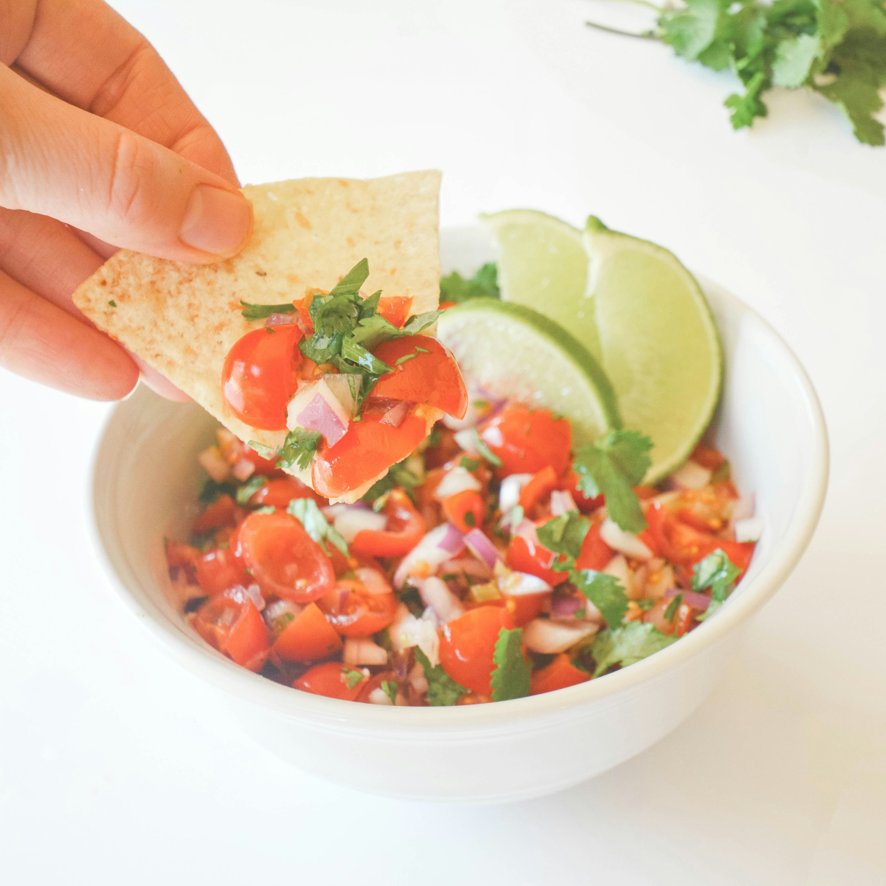

Salsa Recipe
Home

Description
Homemade salsa with ripe tomatoes, onion, jalapenos and a few other fresh ingredients.
Ingredients
- 4 large ripe tomatoes, chopped
- 1 onion, chopped
- 1 tomatillo, diced (optional)
- 1/2 cup chopped fresh cilantro
- 3 cloves garlic, minced
- 1 tablespoon lime juice
- salt to taste
- 1 jalapeno, minced
Steps
- Gather all ingredients.
- Combine tomatoes, onion, tomatillo, cilantro, garlic, lime juice, and salt in a medium-sized mixing bowl. Mix well
- Add 1/2 of the jalapeno pepper and taste. If you desire your salsa with more kick, add remaining 1/2 jalapeno.
- Cover the salsa and chill until ready to serve.